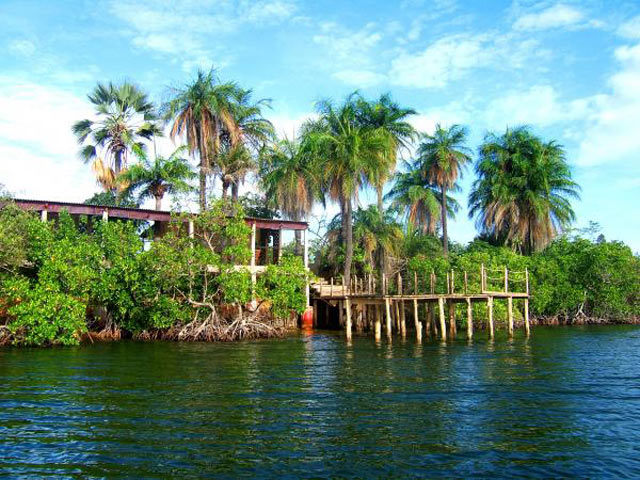
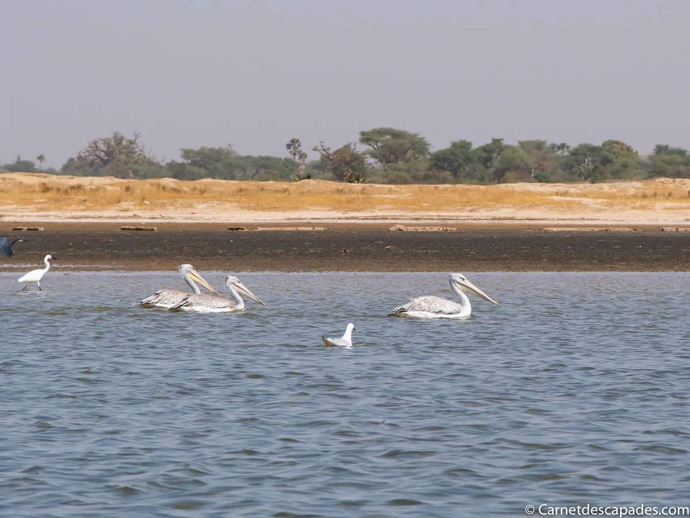
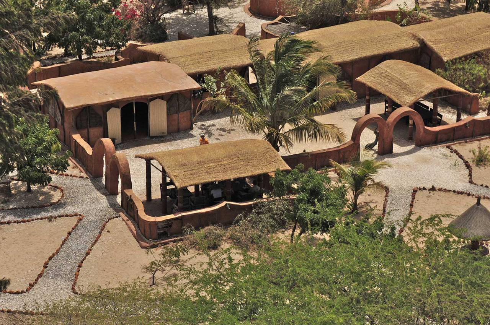
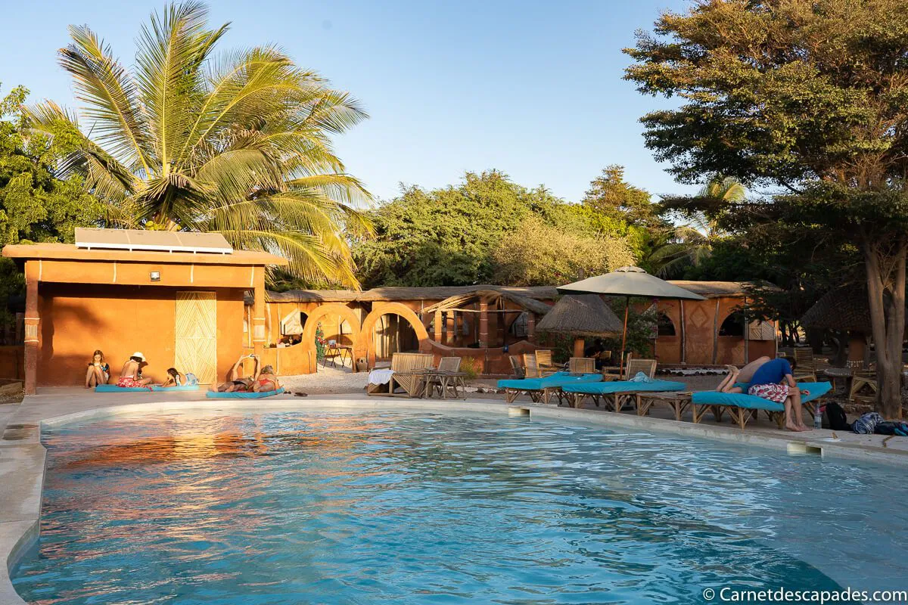
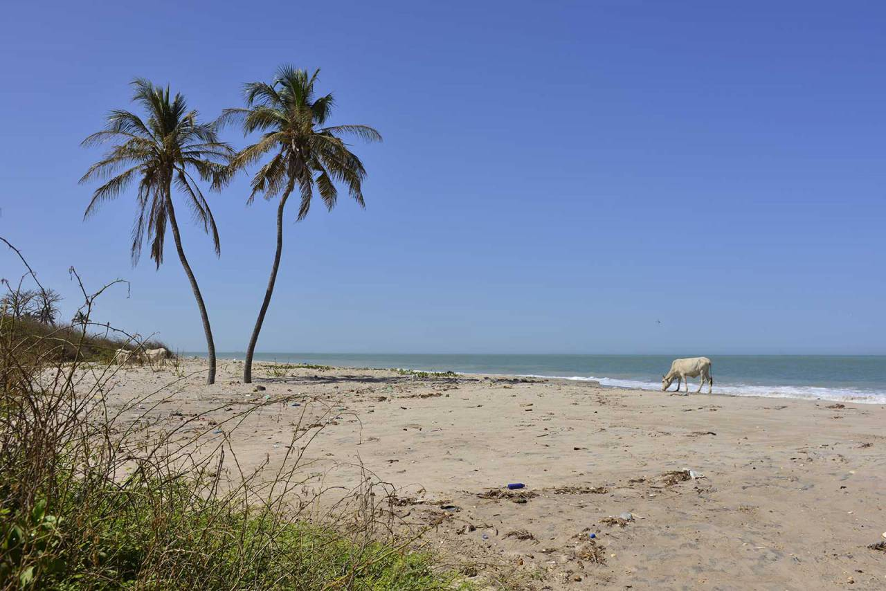
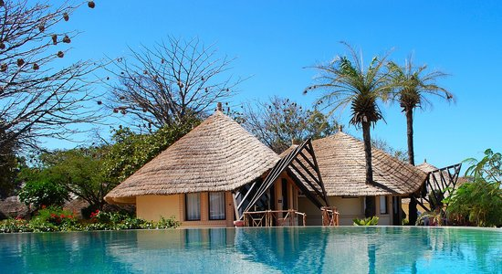
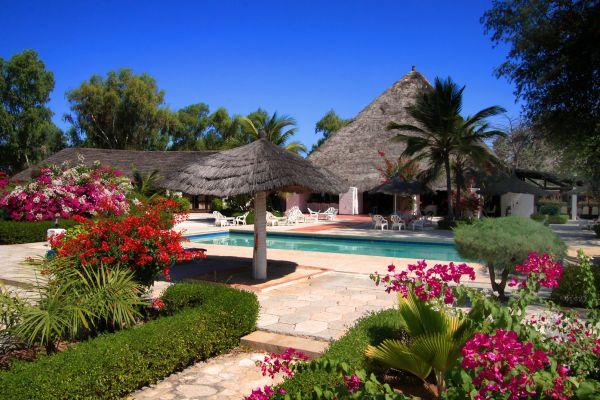
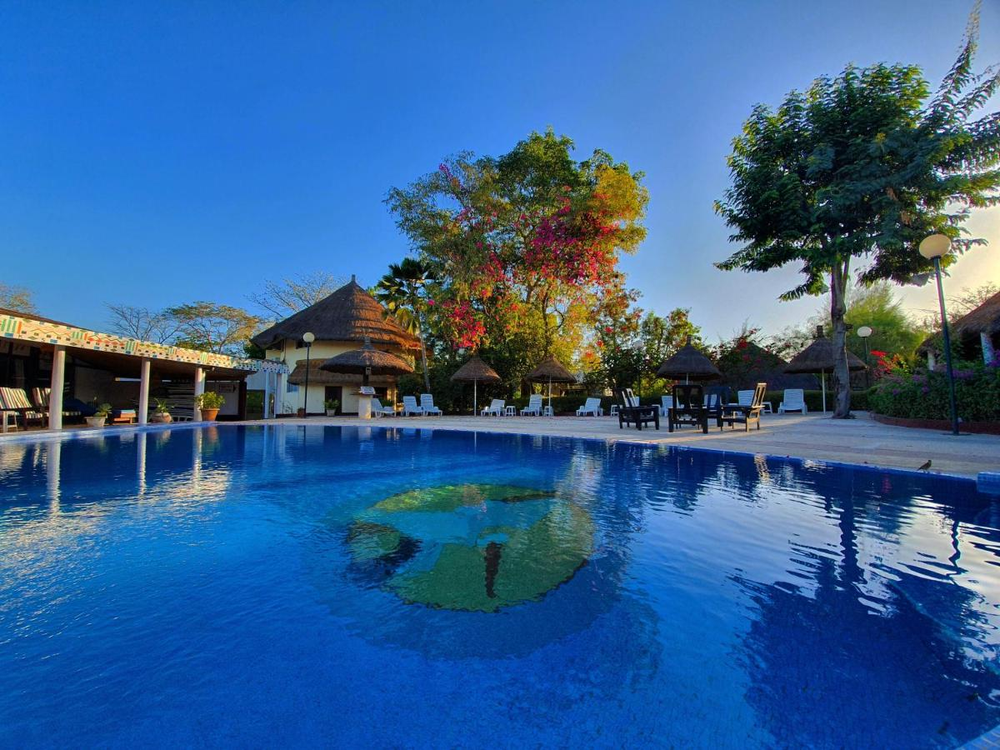

Sine Saloum , rien que le nom fait rêver, vous ne trouvez pas? Il s’agit de la région située au sud de la Petite Côte du Sénégal, juste au nord de la Gambie. Elle est connue pour la beauté de ses paysages, que l’on peut admirer dans le Parc national du Sine-Saloum, inscrit au Patrimoine mondial de l’Unesco. Le parc s’étend autour du delta du Sine Saloum, le point de confluence de deux fleuves (le Sine et le Saloum, logique n’est-ce pas?) avec la mer. C’est une région très particulière de par les innombrables petites îles formées par les fleuves et l’écosystème qui y règne: ce mélange d’eau douce et d’eau de mer ne convient qu’à peu d’espèces végétales et est donc le royaume de la mangrove, cette sorte de forêt poussant dans des marais maritimes et se caractérisant notamment par les palétuviers qui y poussent.
Mar-Lodj (Mar Lothie) est une île du Sine Saloum où le temps semble un peu s’être arrêté. Une île paisible où il fait bon faire une pause, mais aussi certainement y passer la nuit pour s’imprégner de l’atmosphère du lieu et l’explorer plus en détail. Nous nous sommes contentés d’y déjeuner puis d’y faire une visite guidée, mais j’aurais bien aimé y dormir, j’ai eu la sensation d’y être passée trop vite. A notre arrivée en pirogue, nous commençons par déjeuner au restaurant Farakaba, situé juste au bord de l’eau et où nous nous régalons de crevettes et poisson grillé. Un emplacement assez idyllique où une petite sieste n’aurait pas été désagréable, d’ailleurs!
 La diversité des paysages qui mènent au village de Palmarin Diakhanor est juste incroyable. L'Ecolodge de Palmarin, situé entre bord de mer et estuaire du Saloum, offre calme et dépaysement. Ces bungalows tout confort dispose de wc et salle d'eau privatifs. L'Ecolodge de Palmarin c'est près de 3km de plages de sable blanc où vous pourrez vous baigner tranquillement, en toute sécurité. C'est aussi des balades à travers les palmeraies, au cœur de la foret classée où l'on pourra aller à la découverte des hyènes. Villages chaleureux et accueillants, forets préservées, lagunes bordées de palétuviers et paradis de milliers d'oiseaux… un environnement unique à découvrir dans cette région classée réserve naturelle.
  Le Sine Saloum renferme également des hôtels de luxe tels que:Le Keur Saloum,Pélican Lodge, Lodge du Delta Niominka et plein d'autres encore.
  Nous espérons un jour pouvoir visiter cet endroit enchanteur et voir toutes les merveilles qu'il renferme